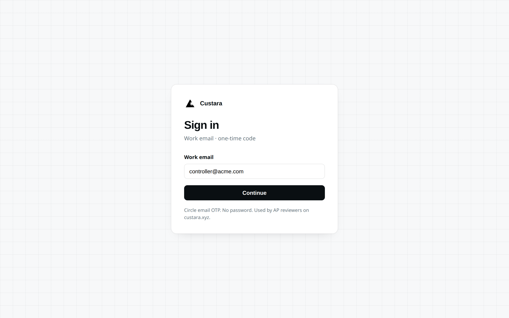
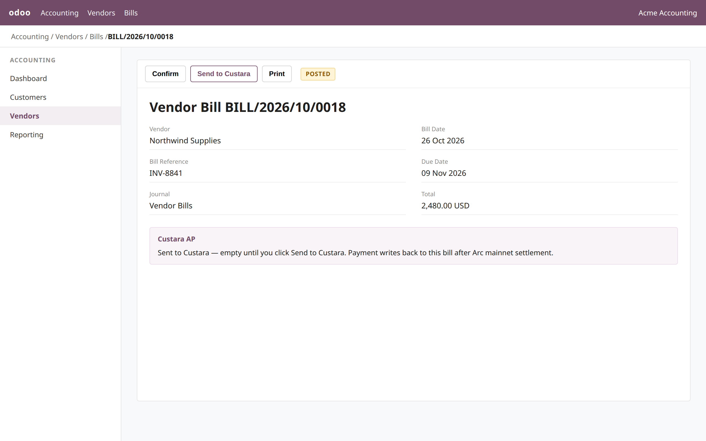
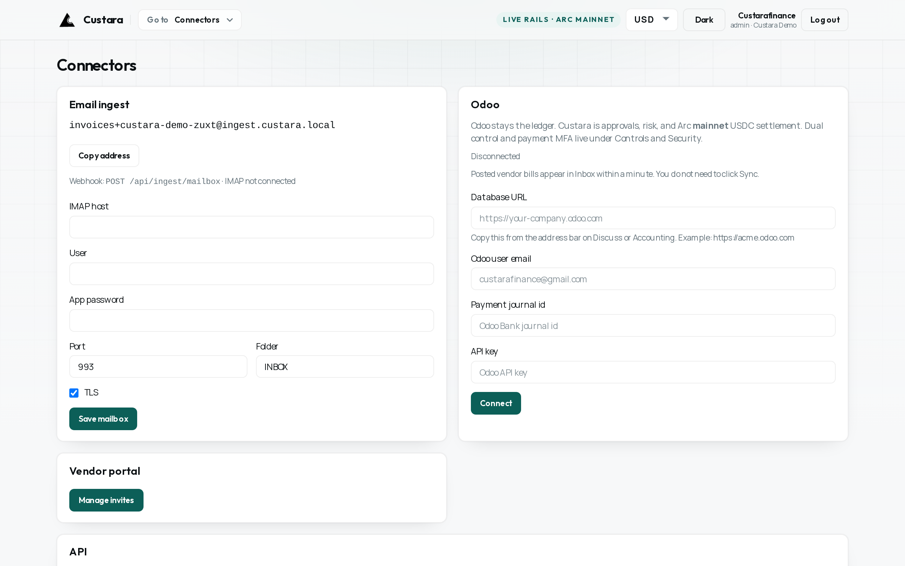
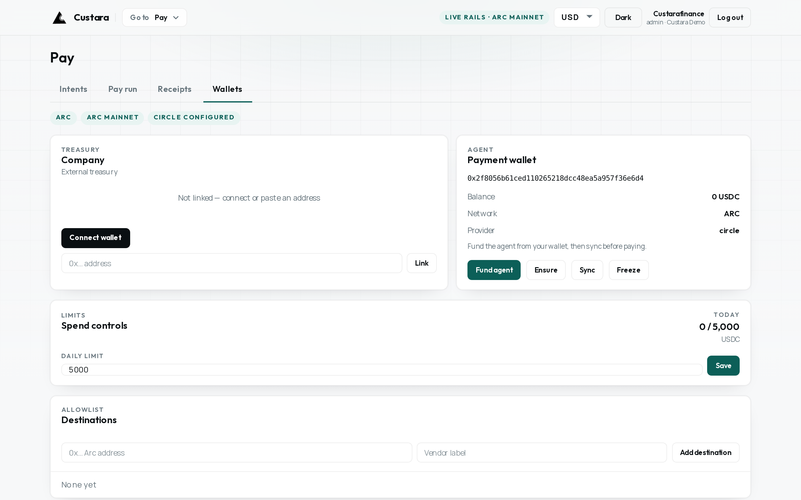
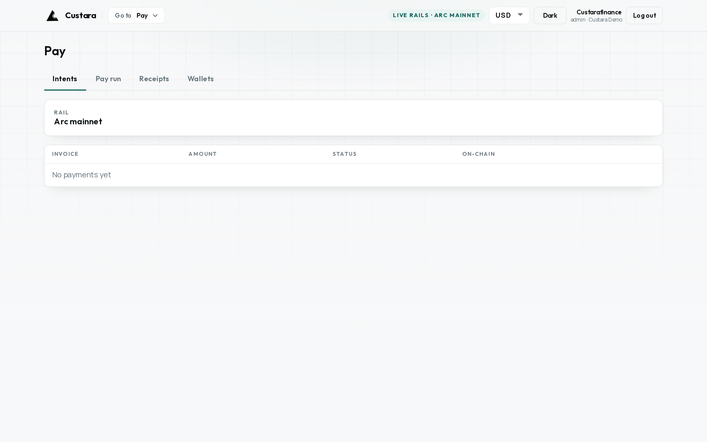

Custara AP for Odoo
The AP control plane. Odoo stays the ledger.
Reviewers approve in Custara. Settlement is Arc mainnet USDC on custara.xyz. The same vendor bill in Odoo receives the write-back. Free LGPL-3 module for Odoo 18.
Ledger in Odoo
Taxes, journals, and reconciliation stay in Accounting. Custara never becomes the book of record.
Dual control
Policy, MFA, and destination allowlist live in Custara before anyone can settle a bill.
Arc mainnet USDC
Approved bills settle on Arc mainnet via Circle. No invented transaction hashes.
Write-back
Payment posts onto the same Odoo vendor bill. A failed pay does not mark the bill paid.
How it works
Five steps from a posted vendor bill to a reconciled payment.
Post the vendor bill in Odoo
Sync or Send to Custara
Review risk and approve
Pay Arc mainnet USDC
Odoo bill reconciles
Sign in
Circle email OTP on custara.xyz. No shared AP passwords.

Work email · one-time code
Controllers sign in at custara.xyz. Production is Arc mainnet. Use testnet.custara.xyz only for demos.
Connect Odoo
Point the module at https://custara.xyz and a Partner API key, or connect the database from Custara.

In Odoo
Settings → Accounting → Custara AP. API URL and Partner key. Default production host is https://custara.xyz.

Send to Custara
On a vendor bill or credit, Send to Custara posts the bill into Inbox immediately. Posted bills also sync on the worker.

In Custara
Connectors → Odoo. Database URL, user email, payment journal, and API key. Odoo Online can use this path without installing the module.
Controls
Spend limit, destination allowlist, and the workspace payment wallet — before anyone pays.

Wallets and spend controls
Fund the Circle agent, set the daily USDC cap, and allowlist vendor destinations. Live rails show Arc mainnet.
Pay and write-back
Settle approved bills in USDC. Custara writes the payment onto the same Odoo bill.

Pay on Arc mainnet
Intents, pay run, receipts, and wallets. A failed Custara payment does not mark the Odoo bill paid.
Setup
- Install Custara AP and update the Apps list (Odoo 18, self-hosted or Odoo.sh).
- Settings → Accounting → Custara AP: API URL
https://custara.xyzand a Custara Partner API key from Developers. - Open a vendor bill and click Send to Custara, or post the bill and wait for sync.
- Approve and pay in Custara. The payment writes back onto that bill.
Odoo Online can skip the module and use Custara → Connectors with a JSON-RPC API key. Demo data only: testnet.custara.xyz.
Support
Product: https://custara.xyz
Docs: Odoo app guide
Listing source: https://github.com/Samped/custara-odoo